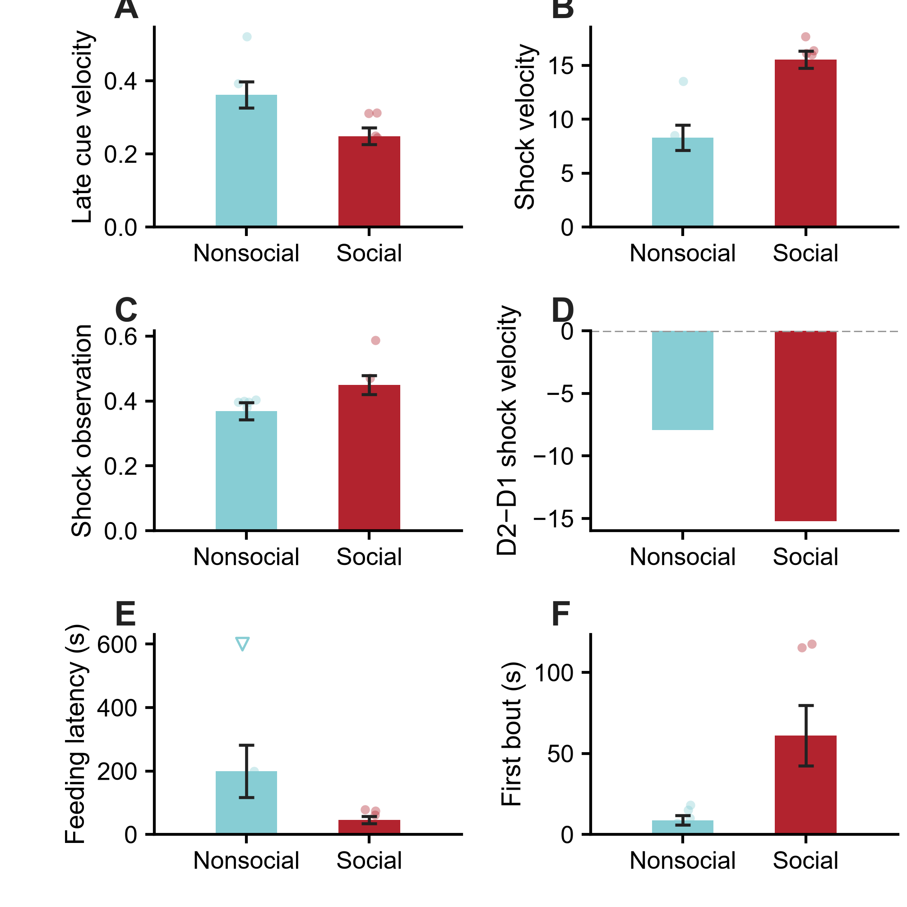
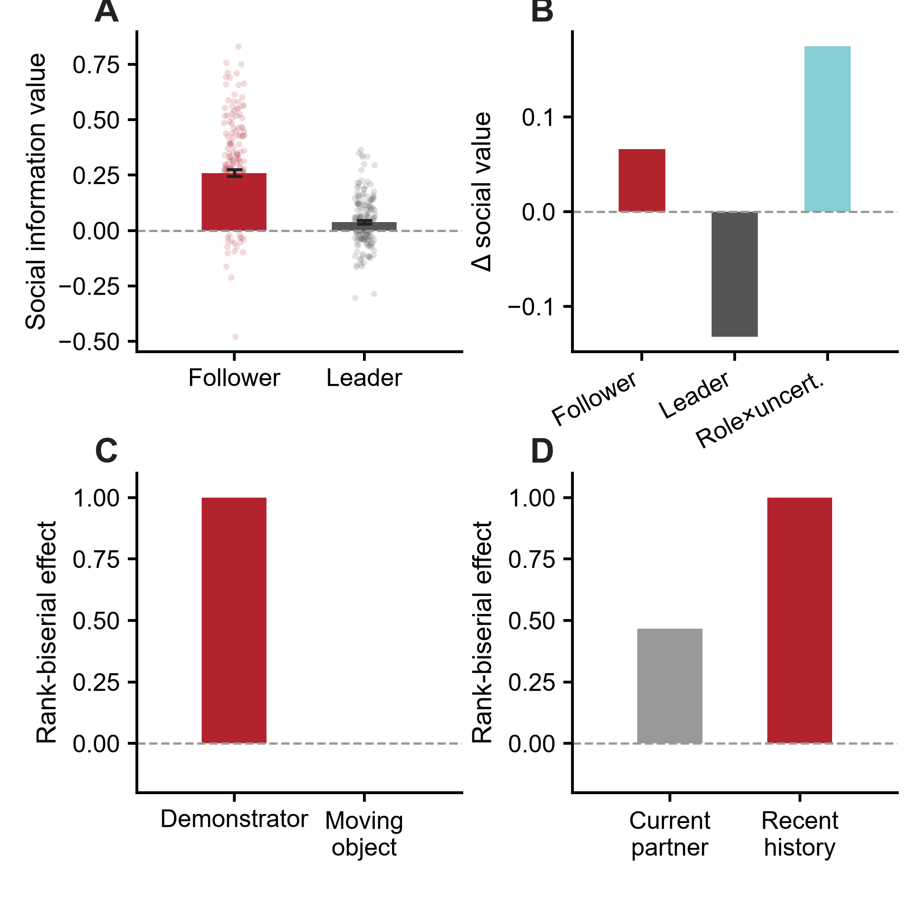

From observation to action: social information foraging, dopamine timing and causal credit assignment
Animals learn when social information is worth sampling, convert sampled content into their own action, and assign credit to social outcomes. VTA dopamine expresses these computations in sequence, while the same computational principles recur across current external tests in mouse, rat, macaque, marmoset and human.
Default behavioral SLM = mechanistic SLM + generic choice persistence. It beats Current+CK in 20/27 animals and TinyRNN in 23/27; full-history MLP is retained as a capacity ceiling audit.
External evidence is organized around source-tagged credit, state-gated information value, task-matched multiscale state, and sampling-to-action separation; each dataset is labeled by what it actually tests.
VTA dopamine follows the episode chronology: pre-outcome sampling policy, sampling action-prediction error (APE), then post-outcome reward/social-credit update.
JAWS lowers the post-outcome Active social-credit update in 10/10 animals and the accumulated Active credit state in 9/10; both JAWS cohorts replicate the endpoint direction.
In the learner cohort, Feed hazard rises within 3 s after observing demonstrator feeding; the state-residualized increase is +6.09 pp.
The learned recurrent policy is better explained by explicit SLM coordinates in every fold × seed × reward run, supporting these coordinates as a reusable description of task solution.
This page keeps the major behavioral, computational, neural, causal and generative results together so the full SOE mechanism can be inspected from one place. Main evidence panels use SOE project data.
SOE is learned
SRI rises in 35/40 animals; live social input, visual access and familiarity all matter.
Observation becomes efficient
Learning changes conversion of observation into feeding more than it changes gross observation rate.
Social value is adaptive
Social information is most useful when current self-state leaves room for external evidence to alter policy.
Default SLM earns its complexity
The default SLM outperforms weak and classical baselines; its mechanistic coordinates are then tested independently in VTA and JAWS.
Learning has multiple timescales
The same strategy uses next-decision, ~5-minute and cross-day memory.
Observed content drives Feed
Demonstrator feeding during the preceding Observe predicts a short-latency increase in native Feed hazard.
SLM is predictive and generative
Mouse-derived SLM variables fit held-out behavior and regenerate trajectory, local strategy and behavioral-state organization in closed loop.
VTA expresses SLM computations in sequence
Q/RPE can explain Post DA; only SLM also captures the pre-outcome Early policy and Middle APE axes.
Information access and dopamine credit are separable
Visual Block limits useful social content; VTA inhibition weakens post-outcome Active social-credit teaching and its accumulated state.
SOE experience generalizes
Prior SOE training alters later novel-food engagement and observational-fear organization.
Four SLM computations organize cross-task evidence
Cross-task evidence is stratified into direct comparator tests, component transfer, neural convergence and literature-only support, with each tier carrying a different evidential weight.
SOE is acquired across the full cohort and successful learning improves observation-to-action conversion
Across all 40 animals, SRI rises from early to late training in 35/40 animals. Learners are defined from late-training SRI for the mechanistic modeling contract. The acquisition headline therefore uses the full 40-animal cohort, while conversion is reported as a separate learner-cohort analysis.

Swipe the table horizontally for all columns →
Foundational behavioral controls
| Discovery | Result | Interpretation | Evidence type |
|---|---|---|---|
| Acquisition | strict learner SRI ≈1.07→4.58; older n=13 lineage .67±.34→2.82±.44, P<.001 | Social coordination strengthens across training. | learner cohort |
| Live social input | Live demonstrator > simulated demonstrator; simulated SRI ≈.499±.258, n=13, P<.001. | Live-social interaction carries the effective teaching signal. | live-social control |
| Visual access | opaque barrier ≈69% reduction; current VB 3.67→1.08, 23/25 lower | successful social coordination requires visual information | historical + current visual-access evidence |
| Familiarity | unfamiliar partner reduces SRI ≈44%, n=11, P<.05 | social evidence is weighted by partner identity/familiarity | historical familiarity evidence |
| Observation phenotype | Socially directed observation rises with training. | Learning refines selective social observation. | training-dependent observation |
| Conversion | Learner Observe→Feed ≈.431→.641; learning progress β≈+.126. | Successful learners become more efficient at using sampled social information. | learner cohort |
Additional behavioral analyses
Active orienting carries predictive social information
Demonstrator feeding/spout state is highly predictive, but observer-side head direction, facing, angular velocity, social turn and social gaze nearly match the all-feature classifier. Social gaze is the strongest single observer-side feature in the manuscript lineage.
Learning reweights an existing behavioral manifold
Successful active-reward bouts are preceded by distinct states. The global manifold remains broadly stable, while occupancy shifts toward socially informative motifs with training.
Conversion progress tracks learning
Conversion progress correlates with ΔSRI (ρ≈.426, P=.0086), directly linking successful information-to-action transfer to behavioral learning.
Social information has state-dependent decision value
Social evidence is valued selectively. Held-out predictive value changes with learning stage and with the observer’s current behavioral state, revealing when external information can most strongly alter policy.
Median +0.00365 nats/decision; rrb=.725; P=.000268.
Median late−early = −0.00378 nats/decision; rrb=−.619; P=.00194.
Social information is most useful when the observer is farther from its own spout.

Multi-timescale memory recovered before the final SLM
One social-learning strategy carries memory from the next decision to minutes and across days
The timescales were recovered independently before the final SLM. Each scale answers a different behavioral need: immediate outcome adjustment, integration of recent social history, and continuity across sessions.
After Active or Passive outcomes, stopping rises immediately; re-entry falls by about 8–9 pp.
Selected γ=.95–.97 corresponds to 20–33 events. Multievent history adds ΔNLL=.0348; the best single-exponential eligibility trace adds only ~.0001.
The true chronological day order beats 500 within-animal day shuffles (P=.001996); retaining the previous-day prior improves 29/40 animals (P=.0125).


The default behavioral SLM is the mechanistic SLM state plus one generic choice-persistence term
SLM asks which compact variables are sufficient to explain social-information sampling while remaining testable in neural and causal experiments. Choice persistence absorbs generic serial choice bias; it is part of the default behavioral readout and is not interpreted as the social-learning mechanism itself.
Prevalence, clock, previous choice and current-state baselines establish how much prediction is available before any learning model is introduced.
The mechanistic SLM core beats RW, WSLS, Q-family, forgetting-Q and choice-kernel baselines under the restricted contract.
SLM + generic choice persistence beats Current+CK in 20/27 animals (P=.00169) and TinyRNN in 23/27 (P=1.59×10⁻⁵).
Default SLM and full-history MLP are indistinguishable in the paired held-animal comparison; the MLP serves as a ceiling check.

Default behavioral model, APE definition, RPE comparator logic, JAWS terminology and Feed-stage boundaries.

Six-family recovery is 97.2%; focused Feature-Q / policy / actor recovery is 59/60 under the recursively generated learner contract.
A structure-free Social World Model independently recovers SLM-like decision coordinates — and adds prospective social efficacy
SLM starts from interpretable hypotheses about policy, value, prediction error and source-specific credit. SWM asks the harder complementary question: if a recurrent model is trained without those SLM equations, does it rediscover the same decision space, and does it learn anything extra that helps explain when social sampling is useful?
ΔActive = P(Active|z,Observe) − P(Active|z,Other) predicts whether an actual Observe becomes Active; all 27/27 held-out learners are above chance.
Under real Visual Block, adding frozen SWM efficacy to the two obvious visible cues raises Active-vs-Unrewarded AUC .491→.581 (10/14, P=.0165). The increment beyond the full 13-cue readout is smaller and not significant (P=.213).
Replacing each held-out social trajectory with a matched training trajectory reduces efficacy AUC in 26/27 animals (P=1.49×10⁻⁸); no-social retraining independently reproduces the drop.
For 12-motif future prediction, SWM beats the strongest direct nonlinear MLP (NLL 1.871; 25/27 animals) and retains its advantage across 1-, 3- and 5-step horizons.


What SWM does — and does not — add to the biology
SWM strengthens three parts of the mechanism. First, it gives a prospective quantity that predicts when social sampling is likely to improve the animal's own future action. Second, a model trained without SLM structure independently contains SLM-like decision coordinates, and that subspace contributes selectively to Observe policy. Third, SWM captures additional sequential dynamics needed to predict future behavioral motifs.
Two guardrails remain important. The increase in policy–efficacy alignment across training is not statistically learner-specific because non-learners also change; it should be described as training-dependent alignment, not a learner-only emergence. Cross-task pretraining improves sample efficiency only in some low-data settings and does not establish a universal foundation model. Full method/control authority.
What information from an Observe event is converted into the learner’s own feeding?
The paradigm requires social observation to influence the observer’s later action. We therefore test the sampled content itself after controlling current self-state, current social geometry and simple observation recency.
The native Feed analysis uses the formal learner cohort; 26 animals contribute both demonstrator-feeding and no-demonstrator-feeding decisions in the ≤3 s contrast.
Within 3 s, Feed hazard is .2273 after observing demonstrator feeding and .1519 after observing no feeding; 17/26 positive, P=.0377.
The effect remains after residualizing a frozen self + current-social model; 17/26 positive, P=.0445.
In animals informative in both analyzed sessions, the raw dem-feed hazard contrast increases from the first to the second session (mean shift +7.74 pp, P=.0448). The residualized session-to-session shift is positive but not significant (P=.243).


Paired first→second analyzed-session raw and state-residualized dem-feed hazard contrasts.
SLM variables generate behavior and compactly describe a policy learned by a flexible recurrent agent
The recurrent agent’s learned policy is more accurately described after adding multiscale-memory and source-credit coordinates in every tested fold × seed × reward run. This makes the SLM coordinates useful as a low-dimensional solution to the social-information problem, beyond their role in fitting the mouse data.
The fitted SLM regenerates broad learner trajectories without replaying held-out outcomes.
Autonomous SLM preserves substantial behavioral-state occupancy; mean JS=.0390.
SLM coordinates improve Brier, NLL and AUC for the learned recurrent policy in every run.


A single RPE account explains part of outcome DA; the full episode requires sampling policy, APE and post-outcome credit
The critical evidence is temporal. Early and Middle windows occur before the social outcome is available, whereas reward prediction error and social-credit updating become defined after outcome.
Sampling-policy effect: r_rb=.810, P=.0469. Q/RPE is ~0 here (r_rb=.048); choice-kernel and Q+CK are negative; TinyRNN is significantly wrong-direction.
Learner-linked APE remains ρ=.667 after conditioning on CK, Q+CK or Q error. Reverse competing-error tests are negative.
SLM RPE and belief update are positive (r_rb=.867/.956). Q-all RPE is also positive here (r_rb=.867), so Post DA alone does not identify the mechanism.

SOE is organized by coupled social-sampling and feeding policies
The convergent architecture is hierarchical. One policy determines when social information is worth sampling; a native feeding policy converts informative sampled content into food-directed action; reward outcomes update belief/value states that reorganize future sampling.
Visual Block reduces SRI and Observe→Active efficacy while gross social observation remains available.
Current state, fast outcome history, belief/value and slow prior determine when observation has the highest decision value.
Observing demonstrator feeding predicts an acute excess Feed hazard beyond observer-state prediction.
Contingent VTA inhibition selectively reduces Active social-reward belief updating and successful conversion while gross sampling is preserved.

Evidence for the two-policy architecture
Content specificity. Demonstrator feeding at the preceding Observe improves conditional Feed calibration beyond current observer state.
Controller separation. SLM coordinates organize Observe sampling and social credit, while the native Feed policy is dominated by self-state plus a short-lived content-specific eligibility signal.
Acute conversion. The real mouse shows a +7.54 percentage-point Feed-hazard increase within 3 s after observing demonstrator feeding.
Autonomous sampling. Artificial-SLM Observe choices preferentially sample behaviorally useful social content.
Visual Block and JAWS break different links in the social-information chain
Visual Block reduces access to useful social content. JAWS weakens VTA-dependent teaching after successful social outcomes. Gross observation remains broadly available in both manipulations.


Observe→Active falls .320→.193; 8/10 lower, P=.00391.
Noncontingent OFF→ON is .360→.325 in the same metric.
OFF +.002490 → ON −.000815 per episode; all animals lower, P=.001953.
Normal .0967 → full JAWS .0120; Δ=−.0847, P=.003906.

SOE experience reorganizes later use of social information
Two source-rebuilt assays show transfer beyond the trained feeding contingency. Observational fear is resolved into late-cue immobility, shock-locked reactivity, sustained shock-focused monitoring and D1→D2 attenuation; social-related novelty-suppressed feeding (SAFN) shows faster and more sustained engagement with unfamiliar food.


Late cue velocity: Cliff δ=−.778, P=.0152. Shock velocity: δ=+.944, P=.00433. Late shock observation: δ=+.778, P=.0152. Shock angular-velocity change also increases (δ=+.833, P=.00866).
Shock-velocity change is larger after prior SOE training (Cliff δ=−.944, P=.00433); shock angular-velocity change gives δ=−.833, P=.0130.
Social-trained animals engage unfamiliar food earlier: Cliff δ=−.722, exact P=.01948; permutation log-rank P=.03030; feeding occurs in 6/6 vs 5/6 animals.
Initial feeding engagement is more sustained after prior SOE training: Cliff δ=+.889, P=.00866.
SLM latents forecast domain-specific generalization, not one generic “social score”
The same six Social-trained mice were carried into the later assays. The strongest new result is that a social-credit latent forecasts novel-food initiation better than simple SOE behavioral learning measures, while late action-prediction error maps specifically onto later shock reactivity.
In strict leave-one-mouse-out prediction, the SLM credit family lowers held-out absolute error in all six mice relative to a behavior family containing late SRI, ΔSRI, late Observe→Active conversion and Δconversion. Median error falls from 43.83 to 12.43 s; r_rb=1.00, P=.0156; full permutation model comparison P=.0486.
Late SOE |APE| tracks later shock-locked velocity (exact P=.0167; four-endpoint fear-family BH q=.0333). The relation is concentrated in the middle 10 shock trials, where within-timecourse BH q=.0417.
Across the full cohort, Δ|RPE| tracks ΔObserve→Active conversion (ρ=.615, P=2.4×10⁻⁵), late credit tracks late conversion (ρ=.558, P=.000181), and ΔQ / Δpolicy track ΔSRI.


Primary matched/mismatched correlations and exact permutation statistic.
Three credit definitions × 2/3/4-day windows.
Double mapping, nested prediction and biological interpretation.

Active-credit maintenance → novel-food initiation: ρ=.886; late |APE| → fear shock reactivity: ρ=.943.
Credit → fear is only ρ=.143; APE → food is ρ=−.086. One generic social-learning-strength explanation does not fit the mapping.
Matched−mismatched contrast=1.771 under the full 720×720 independent-domain exact permutation.
The latent-to-phenotype mapping is structured, not generic
Two SOE latents and two later phenotypes are placed in one 2×2 map. The decisive question is whether the biologically matched links are stronger than the mismatched links.
Strict out-of-sample audit
The domain-matched latent effects remain small-n results. For food, the nested credit-family model gives R²=.713 with permutation P=.0625; its held-out absolute error is lower than the nested simple-behavior family in 6/6 mice, and the direct full-model permutation comparison is P=.0486. For fear, the APE family gives R²=.307 (P=.0514) and predicted↔observed rank ρ=.829 (P=.0111); simple SOE behavior also predicts shock-velocity variance (R²=.548, P=.0333). The current evidence supports domain-matched forecasting by distinct computational variables, with the clearest incremental value in novel-food initiation.
The earlier four-panel nested-validation figure is retained for audit: open v2 figure.

Nested leave-one-mouse-out comparison and exact permutation tests.
Held-out absolute-error comparison used for the 6/6 food result.
First/middle/last shock-epoch specificity and within-target correction.
2-, 3- and 4-day late-SOE definitions.
Within-SOE latent-to-learning relationships across the full cohort.
Full biological interpretation, model-comparison contract and prospective predictions.
Four SLM computations organize the cross-task evidence
The cross-species claim is no longer based on counting positive datasets. Each external result is assigned to the computation it tests, and the comparator level is shown explicitly. Direct behavioral transfer, component transfer, neural convergence and literature-only support are kept separate.

Where does the structured state clear a stronger model comparator?
A current-state/no-history baseline only establishes that history helps. The stronger question is whether the structured state improves over a matched alternative model and approaches a flexible ceiling.


The external datasets do not all answer the same model-selection question
| Dataset | What is tested now | Comparator | Independent unit | Current interpretation |
|---|---|---|---|---|
| Human exp/obs | multiscale social state | best matched Feature-Q; RNN ceiling | 10 held-out subjects | 8/10 vs Feature-Q; r_rb=.891; one-sided P=.00488 |
| Macaque behavior | multiscale + source structure | Feature-Q sensitivity; RNN ceiling | 2 monkeys; 44 nested date clusters | 41/44 date clusters improve; sensitivity, not animal-level population inference |
| Rat observational maze | source-tagged social evidence | self-history; moving-object source | 5 demonstrator rats | direct source-identity/component test; not a full classical-RL adjudication |
| Rat DANDI001169 | multiscale state | nested 4-fold held-rat CV over WSLS/Q/asym-Q/forget-Q/CK/Q+CK | 10 held-out rats | nested CV selects CK in 5/5 outer folds; multiscale wins 8/10; r_rb=.891; one-sided P=.00488 |
| Aeon | recent partner history | self/current-social baselines | 5 experiments | social-history component test |
| Cooperative foraging | social information value / policy | self-only; flexible RF | fixed held-out trajectories from one dyad | within-dyad validation consistency; not animal-level generalization |
Full target data: all held-out sessions favor the SOE-trained recurrent core; both monkeys are positive in all five sessions.
Direction is positive at full target data but does not reach the confirmatory threshold; transfer is not universal.
Macaque pretraining improves SOE in 5/5 folds with 2 or 4 SOE training animals, but the advantage disappears with 8 animals.

SOE-learned recurrent dynamics transfer selectively to macaque choice
This is a stricter test than re-fitting the SLM equations in another dataset. The recurrent core is pretrained on SOE, frozen, and only a new target adapter/head is trained. The comparator uses the same target adapter/head with an equally frozen random recurrent core.
Social information is useful conditionally, not uniformly
This is the strongest cross-task behavioral convergence: the value of partner information depends on decision-maker state, source identity, role and recent social history.

The two-controller architecture is strongest in SOE, with an external architectural analogue
In SOE, the information-sampling policy and native Feed policy are separable: sampled demonstrator-feeding content, not a shared scalar SLM state, predicts short-latency Feed conversion. The marmoset task provides the closest external analogue because gaze/sampling gates partner evidence before that evidence is accumulated into choice.
Recent Observe alone and the old scalar SLM state are insufficient; observed demonstrator-feeding content produces the short-latency conversion signal.
Partner evidence is gated by active gaze and then accumulated into decision variables. With only two animals, this provides an architectural analogue; population-level replication of the SOE two-policy model requires additional animals.
Demonstrator evidence predicts the observer's later choice more strongly than a moving-object source, supporting content-to-action transfer without demonstrating an explicit sample controller.
Neural datasets are mapped to specific computations without treating neurons as animals
ACC tests the multiscale-state component. Reward DA provides a prospective behavior bridge with DLS dLight as a negative control. Marmoset effects are displayed separately for the two recorded animals; neuron-level P values are not used as population inference.

The current cell-slope reanalysis is not used as independent evidence
The published Noritake/Isoda study reports agent-specific self- and other-RPE populations and an O-RPE decoder. Our earlier replot selected the published RPE-defined subpopulations and then re-estimated RPE slopes from those same population files; that is circular for establishing the existence of the RPE effect. It has therefore been removed from the quantitative main figure. The public release provides preselected population objects and decoder outputs, but not a trial-resolved table that currently lets us redo cell classification on one half of trials and test on the other half. A split-half or held-out cross-source validation is required before this dataset is promoted again as an independent quantitative SLM-credit test.
The original source-data replot remains below for audit only; its cellwise P values are not part of the cross-species evidence count.
What the current external evidence can support
Rat demonstrator versus moving-object specificity and macaque source-aware state support source identity. Primate RPE remains literature/audit support until independent validation.
SOE state gating, cooperative role-by-uncertainty and Aeon partner history converge on conditional information value.
Human, rat DANDI001169 and macaque structured states clear stronger matched classical/Feature-Q comparators; a frozen SOE recurrent core also transfers to macaque choice. Mouse 001632 remains component-level timing support.
SOE establishes separate Observe and Feed control. Marmoset gaze-gated evidence accumulation is the closest current external architectural analogue.
Dataset-depth audits and source plots

Retained for audit; not used as the main cross-dataset figure because small-n effects saturate near +1 and mix different independent units.

Brier, NLL, AUC and source/multiscale ablations.

Rat-level, session-level and moving-object specificity checks.

Held-out trajectory values; trajectories are not treated as independent animals.

Source-data units for the two animals; cell-level P values are descriptive within-animal evidence only.

Selection-circular for our slope reanalysis; excluded from quantitative cross-species inference pending split-half/held-out validation.

Task-adaptive temporal-state component test; not social SLM transfer.
Human, rat and macaque stronger-comparator results with the independent-unit contract explicit; rat family selection is nested held-rat CV.
Per-rat Brier values under the original same-zoo outer folds; the classical family is selected by inner held-rat CV using only outer-training rats.
WSLS, Q, asymmetric-Q, forgetting-Q, CK and Q+CK versus structured multiscale history.
Inner held-rat CV score for every classical family in each outer fold; CK wins 5/5.
Primary 10-rat paired result: 8/10, r_rb=.891, P=.00488.
Brier, NLL and AUC paired held-rat tests under the nested-CV classical comparator.
Per-rat Brier/NLL/AUC for nested-CV CK versus structured multiscale.
Evidence tier, SLM component, unit, effect and interpretation.
All external datasets, including component-only and control results.
Seed-averaged held-out-unit effects for macaque and Aeon.
Nested-session direction separately for Lalo and Offenbach.
Targeted reverse-transfer results across 2, 4 and 8 SOE training animals.
Open the exact analysis authority behind the page
The visual page is a navigation layer. Numeric authority remains in the versioned checkpoint, analysis master, focused mechanistic notes and downloadable CSV tables below.
Square 3.35-inch canvas, 600 dpi, categorical spacing, color hierarchy, paired-data and web-display rules.
Comparator correction, primate-RPE circularity audit, four-computation synthesis, frozen-core transfer, and same-animal generalization boundary.
Latest project-wide analysis authority, statistics, provenance and reproducibility records.
Comprehensive analysis/results authority.
Strict future Feed contract and observed-content bridge.
Generated sampling schedule tested against native Feed conversion.
Generative sufficiency, recurrent convergence and biological grounding.
Visual Block and JAWS computational lesions.
Canonical held-animal behavioral model table.
Audited behavior, Early/Middle/Post DA, JAWS, recovery and generation registry.
35/36 six-family recovery and 59/60 focused recovery authority.
Recovered early phenotype, social gaze, motifs, learning and historical controls.
Frozen Early/Middle/Post model evidence.
Project-wide bounded effects and inferential units.
Brier, AUC, paired rank-biserial effect and paired P on the same held-animal cohort.
Source values for the structured-state comparison figure.
Fast stopping, stop/re-entry, 20–33-event history, slow latent and cross-day prior statistics.
Contingent, noncontingent, continuous within-session, session-scale and cohort-replication statistics.
Detailed generalization endpoints used by the expanded figure.
Full-cohort SRI acquisition statistic used in the revised phenotype panel.
Animal-level SLM+choice-persistence comparisons against Current+CK, TinyRNN and full-history MLP.
Task-specific bounded effects and exact P values used in the cross-species evidence plot.
Dataset × SLM-principle map used in the cross-species evidence matrix.
Corrected Early Actor-policy effect and the frozen Early/Middle/Post comparator statistics.
Baseline, structured-state and flexible-reference losses for contracts with all three models available.
All 12 external dataset families with social/non-social source type and principle-level evidence coverage.
Exact comparison, independent-unit n, wins, paired rank-biserial effect and P for every unit-level panel.
Dataset-level baseline and structured median metrics used to annotate the raw benchmark panels.
Effect sizes, bootstrap 95% CIs, wins, n and exact P values used in the cross-dataset forest plot.
Seven-sequence Brier/NLL/AUC and module-ablation statistics for DANDI001435.
Rat-level and session-level source-evidence effects across Brier, NLL and accuracy.
Per-animal trial-clock versus trial+time statistics by reward-spacing group.
Independent-unit counts for the raw marmoset mechanistic panels.
Exact held-out trajectory-level social-value, predictive and uncertainty-gating comparisons.
Per-trajectory values used in the cooperative-foraging benchmark figure.
Same-animal domain-matched tests, family correction and nested leave-one-mouse-out validation.
Current page build: 2026-10-05 · figure style V52 · mobile-audited scientific working page.